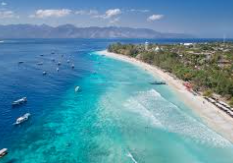
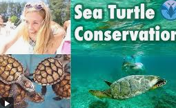
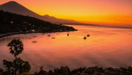

🏨 Atrakce v okolí hotelu Gili Pesona

Gili Trawangan
Ostrov s bílými plážemi, bez aut a motocyklů. (2 km, 10 minut lodí)
🔍 Více podrobností 📍 Zobrazit trasu

Turtle Conservation
Centrum ochrany mořských želv. (1.5 km, 5 minut pěšky)
🔍 Více podrobností 📍 Zobrazit trasu
Gili Meno
Klidný ostrov známý svými korálovými útesy. (4 km, 15 minut lodí)
🔍 Více podrobností 📍 Zobrazit trasu

Sunset Point
Oblíbené místo pro sledování západu slunce. (2 km, 10 minut na kole)
🔍 Více podrobností 📍 Zobrazit trasuGili Air
Ostrov s kavárnami a šnorchlováním. (5 km, 20 minut lodí)
🔍 Více podrobností 📍 Zobrazit trasu